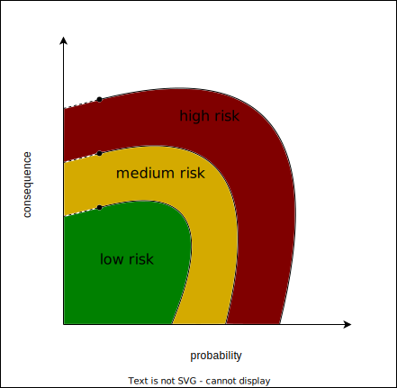

The Financial Basics
Contents
The Financial Basics#
to be made
Intution#
to be made
Risk Management and Returns#
Risks are all about chances of future events, more specifically, chances of negative future events. In finance we always try to manage the negative impact events might have on our investments. Take for example a coin flip. There are two possible outcomes: heads or tails. Each has a 50% chance of happening. In our example we want to avoid flipping tail as we will lose 50 euros, while we win 50 euro if we get head. We therefore adjust the coin so that the probability of flipping tails will decrease with 10%.
Adjusting your exposure to risk is what we call risk management. The main goal of risk management is that if the event occurs we can live with the loss. The idea is therefore that you set your own risk appetite (what are you willing to lose?). It is generally thought that as we grow older we should take less risk as the consequence of a bad event has a larger impact on your financial well-being.
Note that there are two dimensions when talking about risk (see graph):

the severity of the loss if the event occurs
the probability of the event
The most precarious risks for an investment are the one’s with low probability and high consequence. The main reason for this is that the risks are not observed as much and thus estimating the probability of occurrence is rather difficult. Also, we humans tend to neglect events with low probability as we are not used to them. We generally do not take them into account and are therefore exposed to the risks they are paired with.
Frank is faced with a dilemma. He is at the casino and is playing the following game:
40% for
test if tab works
Returns are coherently linked with risks: The higher the risk the higher the return. You can imagine it as in the following graph.
 Returns are always expressed as an percentage of the initial investment and always refer to a certain time period. In the stock market with can measure the risk of a stock by analyzing the fluctuations of the daily returns.
Returns are always expressed as an percentage of the initial investment and always refer to a certain time period. In the stock market with can measure the risk of a stock by analyzing the fluctuations of the daily returns.
In the next subsection we will talk about interest rates which are a kind of return generally discussed with bonds/obligations.
Interest Rate#
Interest rates are a percentage of an initial capital and are calculated on a time horizon. For example a yearly interest rate of two percent on an initial capital of 1 000 euro will amount to 20 euro after one year, while a monthly interest rate of four percent for the same capital will return 40 euro per month. It is therefore important to remember two questions when faced with interest rates:
On what time horizon is the interest rate calculated on?
To which initial capital does the interest rate refer to?
what is a better investment?
10% yearly interest rate on a 10 000 euro investment
2% monthly interest rate on a 5 000 euro investment
To compare the two option we first need to set the monthly interest rate to the yearly interest rate. This is done by multiplying 1.02 12x times
Know we know that the monthly interest rate is actually 2.7x times larger then the 10% yearly interest rate. Option two becomes therefore more attractive, but we still have to account for the initial capital:
The second investment option actually gives us 350 euro more in return and that with a lower initial investment!
Inflation#
to be made
The Monetary Economy#
to be made
technical explanation#
to be made
Interest Rate#
to be made
Inflation#
to be made
The Monetary Economics#
to be made